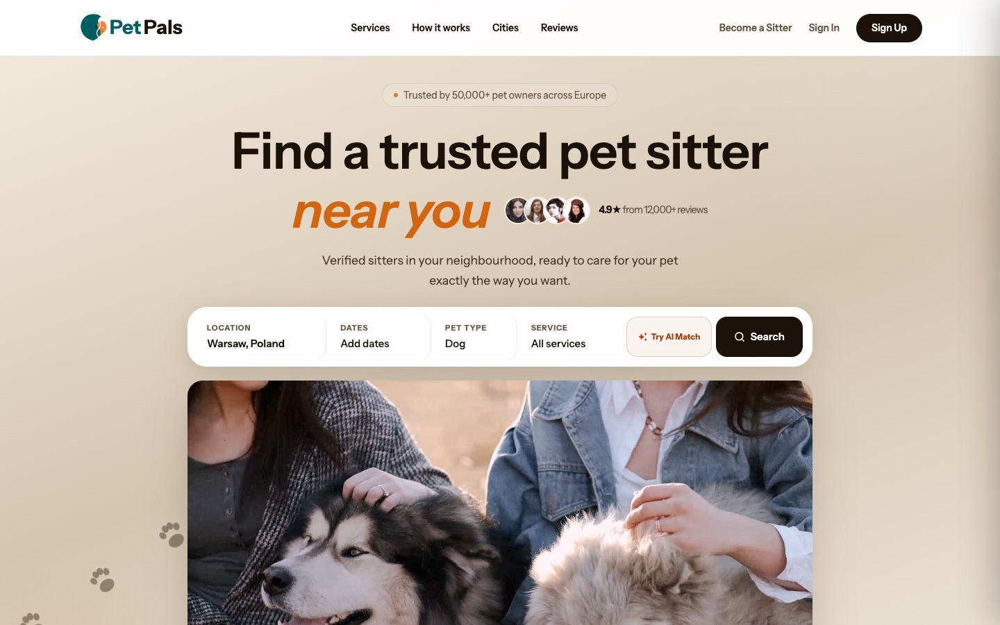
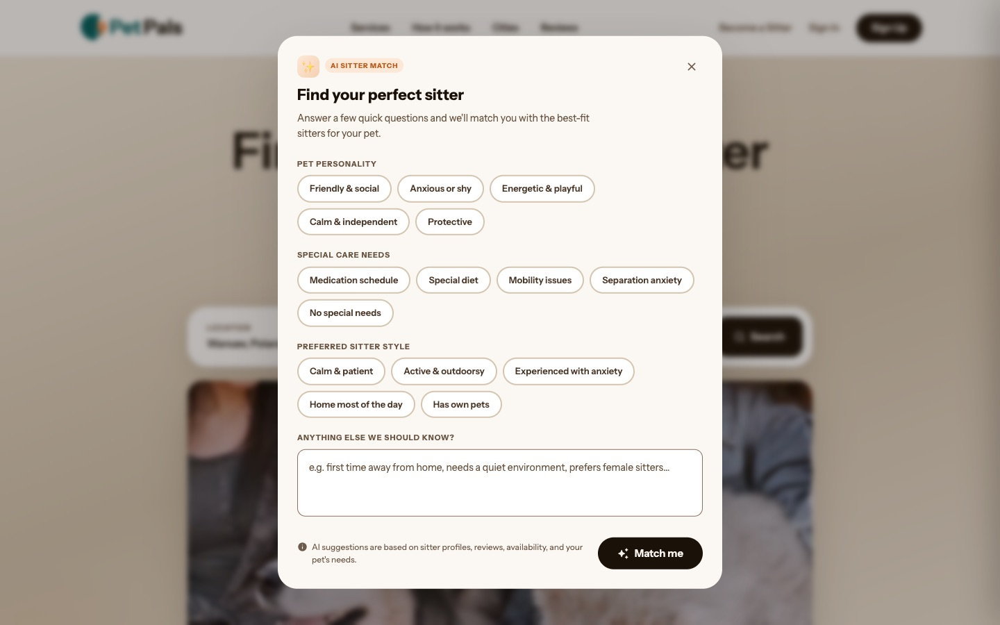
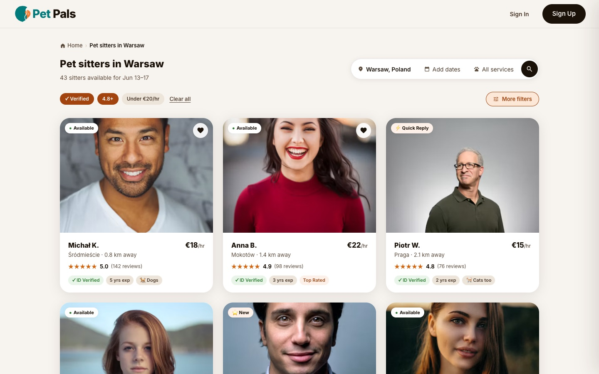
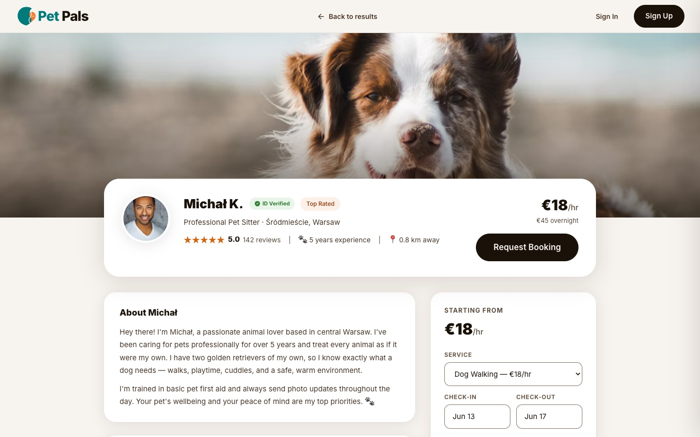
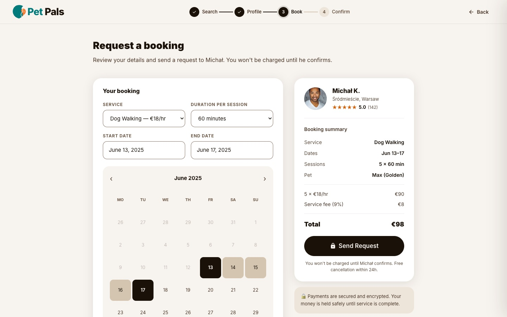
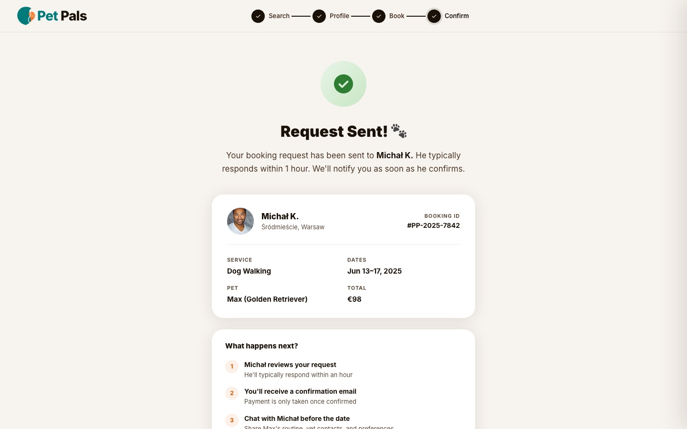
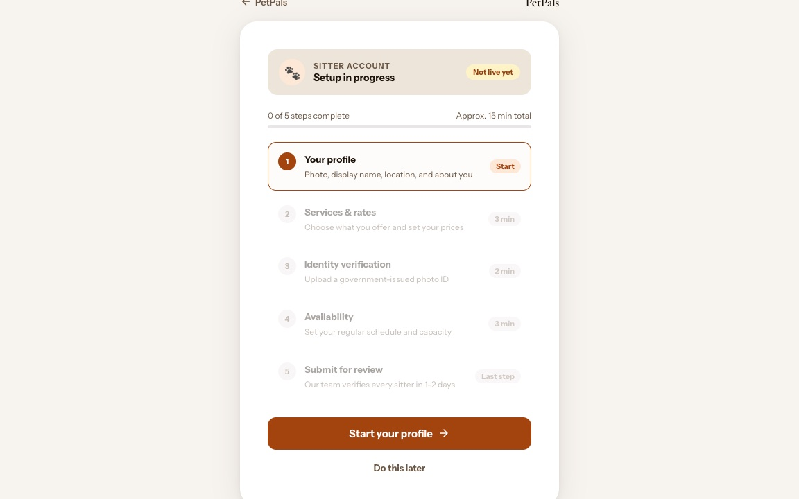
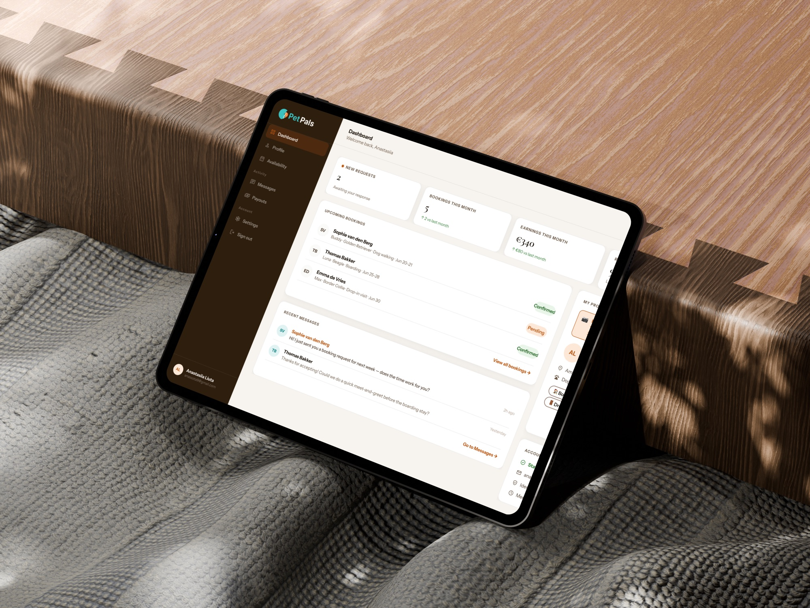

1
Application cut short
The application let a sitter complete only two of its steps instead of the full sequence.
A pet-sitter marketplace designed to make trusting a stranger with your pet feel safe and simple, from the first search to the walk itself.
PetPal connects pet owners with verified local sitters for walks, drop-in visits and boarding. The bet behind it: booking pet care should feel closer to asking a trusted friend than gambling on a stranger's profile photo.
Owners aren't only choosing a service. They're choosing who they trust in their home with something they can't supervise. So the interface had to answer three questions before price came up: is this person verified, are they right for my pet, and will I know what's happening while I'm away?
I designed both sides of the marketplace: the owner's path from search to a booking request, and the sitter's path from application to their own dashboard.

I worked on PetPal on my own over four weeks and took it from the product idea to a working prototype: the trust model, both sides' flows, the visual design and a small design system.
PetPal had no research with participants. To check the flows, I walked through the prototype end to end the way a new sitter would meet it, and logged where it broke.
The application let a sitter complete only two of its steps instead of the full sequence.
After submitting, the Explore button sent a new sitter to the sitter catalog, which is the owner's view, instead of to their own dashboard.
Registration needed to end in a sitter dashboard. Without one, a new sitter had no space of their own.
The owner's path is six screens long: search or get matched, compare sitters, check a profile, request a booking and see what happens next. Trust signals appear on every step, not only as a rating at the end.
Location, dates, pet type and service lead the search. Try AI Match sits right next to the Search button.

For owners who'd rather be matched than browse: pet personality, special care needs and preferred sitter style, then one button.

Verified, rating and price work as quick filter chips. Every card shows ID verification, experience and distance next to the price.

Verification, a Top Rated badge, reviews and experience sit next to the name. The booking panel stays in view on the right.

Service, duration and dates on the left, a live summary with every fee on the right. Nothing is charged until the sitter confirms.

A confirmation with the booking details and what happens next, so the owner isn't left waiting without knowing the next step.
The sitter side got the most detailed flow work: an application broken into steps, and a registration that ends in the sitter's own space instead of the owner's catalog.

Become a Sitter is five short steps with progress and a time estimate for each, instead of one long form.

Registration hands the sitter into their own dashboard: new requests, upcoming bookings, earnings and messages.
PetPal is a working prototype, not a launched business, so there are no usage numbers. What it delivers is a complete flow on both sides of the marketplace.
Owner flow
Search → request sent
A full owner journey in a working prototype: search, AI matching, sitter profiles, booking and confirmation.
Trust first
Before price
Verification, reviews and availability read before price on every sitter card and profile.
Sitter side
5-step application
Become a Sitter split into short steps that end in the sitter's own dashboard, not in the owner's catalog.
Design system
One component set
Cards, filters, trust badges and status states reused across the owner and sitter sides instead of one-off screens.
Designing for trust taught me that reassurance has to be continuous, not only upfront. The signals that matter during a booking carry as much weight as the verification badge someone sees before it.